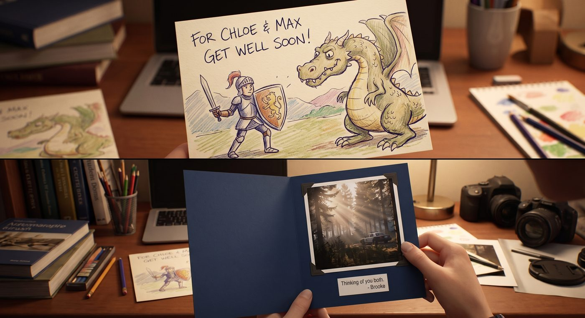

探病

一、心意卡片
「我們應該去看看那個警官。」Max 在跑團夜提議,「他為了救我們受傷,我們連句謝謝都沒正式說過。」
消息一出,Warren、Brooke 和 Kenji 三人不約而同地行動起來——Warren 熬夜手繪了一張卡片,畫風介於「認真」和「災難」之間,主題是一個舉著盾牌的騎士對抗巨龍;Brooke 則做了一張更工整的卡片,裡面夾了張她拍的、旅館外圍晨光穿過樹林的照片;Kenji 的卡片最簡短,只在素色卡紙上寫了一行字:「謝謝你當時反應那麼快。」字跡工整得不像手寫,倒像是刻意練過。
「你們不去嗎?」Chloe 接過三張卡片,挑眉。
「我這幾天要交報告,」Warren 一臉為難。
「我也是,」Brooke 附和,語氣心虛得毫不掩飾。
Kenji 只是聳聳肩:「妳們去就好,幫我帶到就行。」
Chloe 撇撇嘴,顯然看穿了三人合夥找藉口的小把戲,但也沒戳破,拉著 Max 出了門。
二、路障
問題出在半路上。
離警局還有兩條街,人行道和車道忽然完全被人潮堵死——一場名為「No Clowns」的示威遊行正浩浩蕩蕩地展開,舉牌的隊伍從街頭一路排到街尾,喇叭裡放著震耳欲聾的口號,幾個人踩著高蹺、戴著誇張的小丑鼻子,舉著寫滿雙關語的標語牌,在人群裡穿梭表演。
「這是……在反對什麼?」Chloe 一頭霧水地看著人群,「小丑?馬戲團?」
「大概是某種政治隱喻吧,」Max 也一臉困惑,「反正肯定不是真的在反小丑。」
兩人被堵在街角進退兩難,人行道完全被佔滿,連想繞路穿過去都寸步難行。
「這下怎麼辦,」Chloe 踮腳張望,「總不能翻牆過去吧。」
就在這時,一個舉著板夾、脖子上掛著證件牌的年輕人快步走過來,一看到 Chloe——藍頭髮、破洞牛仔外套、渾身的痞氣造型——眼睛立刻一亮。
「妳是我們的人吧!」他毫不猶豫地開口,語氣熟稔得像是老熟人,「妳的造型太有代表性了,來,先簽個到,這個給妳。」
不等 Chloe反應過來,對方已經俐落地在她手臂上貼了一張印著誇張小丑臉的貼紙,又往她胳膊上綁了一條寫著「NO CLOWNS」的臂章。
「等等,我們不是——」Max 想解釋。
「妳朋友也算,」那個年輕人已經轉向 Max,同樣一套流程貼紙加臂章,「今天現場氣氛超好,等等主舞台那邊有人發免費三明治,記得去領。」
說完,他像陣風一樣又衝向下一群路人,繼續重複同樣的台詞。
Chloe 低頭看了眼胳膊上的臂章,又看了眼寸步難行的人群,眼珠一轉。
「隨他去吧,」她一把拉住還想解釋的 Max,「反正貼都貼了。」
兩人戴著臂章,大搖大擺地往人群裡走——神奇的是,原本水泄不通的人潮,看到她們臂上的標誌,竟自動讓出一條路,不時還有人拍拍她們的肩膀,喊一聲「加油」。
「這也太荒謬了吧,」Max 哭笑不得地跟著往前擠,「我們什麼都沒做,光憑一張貼紙就暢通無阻?」
「妳就說這方法有沒有用吧。」Chloe 得意地晃了晃手臂上的臂章。
三、遠處的騷動
穿過人群主幹道時,前方忽然傳來一陣玻璃碎裂的聲響,伴隨著此起彼落的驚呼和歡呼混雜的聲音——幾個情緒激動的示威者正在砸一間空置商鋪的櫥窗,人群裡有人喝止,也有人跟著起鬨。
Max 反射性地舉起隨身帶的相機,想拍下這個混亂的畫面。
「拍那邊幹嘛,」旁邊一個扛著大聲公的示威者好心地拍了拍她的肩膀,伸手指向街角另一側——那裡遠遠地站著一排全副武裝的防暴警察,盾牌反射著陽光,隊形森嚴,卻始終與人群保持著一段刻意拉開的安全距離,「要拍就拍那邊的法西斯豬,這邊沒什麼好拍的。」
Max 愣了一下,把鏡頭轉向那排遠遠站著、明顯在等待上級指示、什麼都沒做的警察,又回頭看了眼那個還在被砸的櫥窗,一時不知道該說什麼。
「走吧,」Chloe 拽了她一把,「這裡不歸我們管。」
四、警局
好不容易穿過人群抵達警局,兩人在前台說明來意——想探望前陣子在旅館案件中受傷的那位警官。
前台接待員仔細打量了她們一番,目光在她們胳膊上的「NO CLOWNS」臂章和貼紙上停留了兩秒,露出一個心照不宣的笑容。
「你們是校報的?」他壓低聲音,語氣帶著一絲了然,「還是哪個獨立媒體的臥底記者?外面那個陣仗,能全身而退跑來探病,不是幹這行的可做不到。」
Chloe 和 Max 對視一眼,誰都沒解釋清楚,含糊地點了點頭。
「三樓,318 床,」接待員已經開始在登記簿上寫訪客紀錄,「他今天精神不錯。」
走廊上,一名滿臉倦容、看起來已經連軸轉了好幾班的老警官正端著咖啡經過,聽見兩人低聲討論剛才街上的騷動,忍不住插了句話。
「那個櫥窗?」他嘆口氣,「上頭的交戰規則就是,不搶不燒,打砸範圍別失控到出人命,基本上就睜一隻眼閉一隻眼。誰都不想在鏡頭前跟一群拿著手機直播的民眾正面衝突,那種畫面上了新聞,最後倒楣的還是基層。」
他說完,像是想起自己好像說得太多,搖搖頭,端著咖啡繼續往前走,留下兩人面面相覷。
五、318 床
病房裡,那名警官——名牌上寫著 Leon——正半靠在床頭,手臂纏著繃帶,看到兩人進來,愣了一下才認出來。
「是妳們……」他露出一個有點虛弱但真誠的笑容,「還好嗎?」
「我們才要問你好不好,」Chloe 把三張卡片和一小束路上順手買的花放到床頭櫃上,「我們朋友做的,雖然有一張畫得跟災難現場一樣。」
Leon 拿起 Warren 那張騎士對抗巨龍的卡片,笑出聲來:「這個我喜歡,掛在牆上剛剛好。」
Max 站在床邊,認真道謝:「真的很謝謝你,如果那天沒有你——」
「別這麼說,」Leon 擺擺手,「這是我的工作。」他頓了頓,目光落在自己纏著繃帶的手臂上,語氣裡帶上一絲說不清是自嘲還是感慨的情緒,「說實話,那天我腦子一片空白,全靠身體反應。」
「你動作很快,」Chloe 由衷地說,「換作是我,大概當場就嚇傻了。」
Leon 不好意思地笑了笑,眼神飄向病房角落——那裡擺著一個他顯然自己帶來的、造型誇張的殭屍手辦模型,底座還印著遊戲標誌。
「不瞞妳們說,」他有點靦腆地說,「我這反應,可能還真跟我老爸有點關係。他是卡普空生化危機的死忠粉,從一代打到重製版,家裡書架擺得滿滿都是攻略本和限定版手辦。我從小跟著他看他打生化危機直播,耳濡目染,大概潛意識裡演練過幾百次怎麼應付近身襲擊了。」
Chloe 愣了兩秒,隨即笑出聲:「所以救你命的,某種意義上是卡普空?」
「某種意義上,」Leon 也跟著笑,難得露出一絲輕鬆的神情,「我出院第一件事,大概是打電話跟我老爸炫耀這件事。」
病房裡的氣氛,在這句荒謬卻真誠的玩笑話裡,終於徹底鬆弛下來。窗外的陽光透過百葉窗灑進來,遠處隱約還能聽見街上示威隊伍的喇叭聲,但病房裡此刻,只剩下三個劫後餘生的人,難得輕鬆的笑聲。